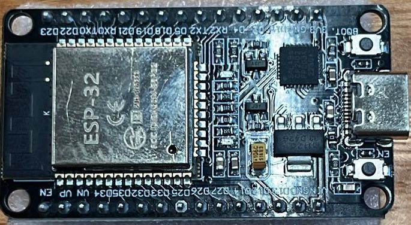
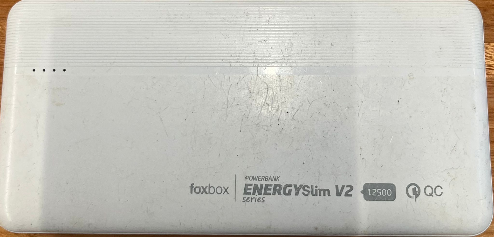
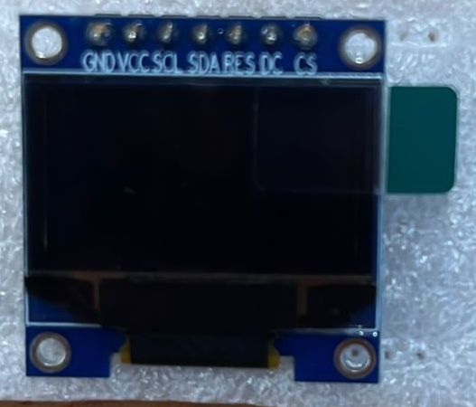
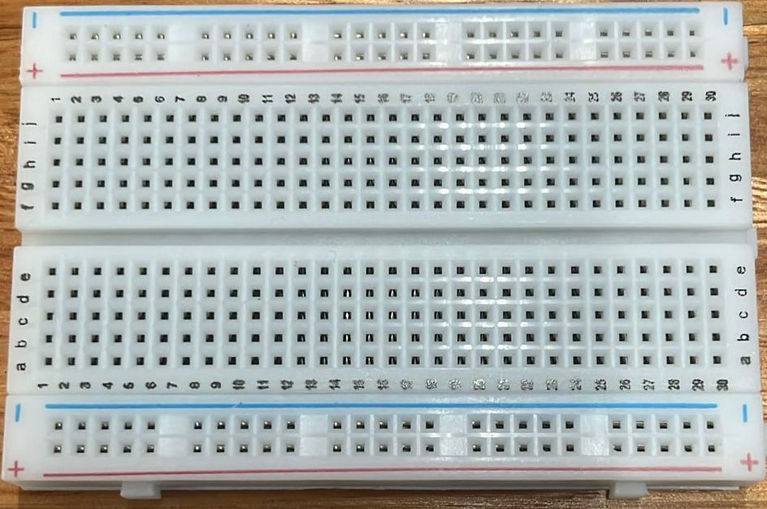
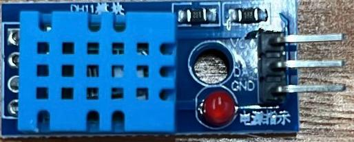

Inicio
Avances
Equipo
Documentación Técnica
Avances
Avances por Semana
Semana 1 (15/08 – 21/08)
Inicio del proyecto y definición de objetivos.
Selección del microcontrolador (ESP32) y sensor (DS18B20).
Prueba inicial de lectura de temperatura con el sensor.
Semana 2 (22/08 – 28/08)
Enmaquetado de la página web.
Se evaluaron opciones: Google Sites y WordPress.
Decisión final: realizar página web manual con Front-end en HTML y CSS.
Definición de la estructura inicial de la web para mostrar los datos del sensor.
Semana 3 (29/08 – 04/09)
Compra de materiales: ESP32 USB-C, DHT11, pantalla OLED 0.96", protoboard 400 puntos.
Recepción de jumpers proporcionados por el profesor.
Finalización de la página web, lista para recibir e integrar los datos del sensor.
Instalación del Arduino IDE para programar el ESP32.
Preparación del prototipo para pruebas futuras de integración del sensor, pantalla OLED y envío de datos.
Problemas a la hora de usar el ESP32 con el Arduino IDE, no lo reconoció en una primera instancia y se probaron varias opciones de configuración.
Entrega del primer avance al profesor, presentando el prototipo, página web y plan de trabajo.
Lista de Materiales

Arduino ESP32

Fuente de energia

Pantalla LED

Protoboard

Sensor de temperatura y humedad(DHT11)